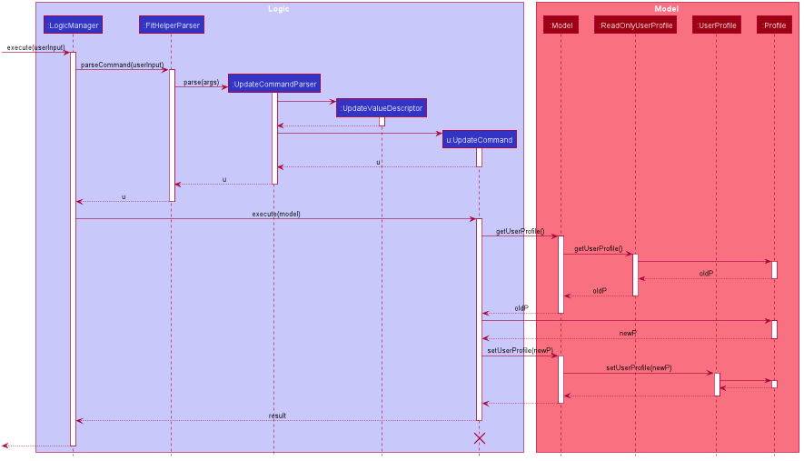

By: AY1920S2-CS2103-T09-4 Since: Feb 2020 Licence: MIT
1. Setting up
Refer to the guide here.
2. Design
2.1. Architecture

The Architecture Diagram given above explains the high-level design of the App. Given below is a quick overview of each component.
The .puml files used to create diagrams in this document can be found in the diagrams folder.
Refer to the Using PlantUML guide to learn how to create and edit diagrams.
|
-
At app launch: Initializes the components in the correct sequence, and connects them up with each other.
-
At shut down: Shuts down the components and invokes cleanup method where necessary.
Commons represents a collection of classes used by multiple other components.
The following class plays an important role at the architecture level:
-
LogsCenter: Used by many classes to write log messages to the App’s log file.
The rest of the App consists of four components.
Each of the four components
-
Defines its API in an
interfacewith the same name as the Component. -
Exposes its functionality using a
{Component Name}Managerclass.
For example, the Logic component (see the class diagram given below) defines it’s API in the Logic.java interface and exposes its functionality using the LogicManager.java class.

How the architecture components interact with each other
The Sequence Diagram below shows how the components interact with each other for the scenario where the user issues the command delete 1.

delete 1 commandThe sections below give more details of each component.
2.2. UI component

API : Ui.java
The UI consists of a MainWindow that is made up of parts e.g.CommandBox, ResultDisplay, PersonListPanel, StatusBarFooter etc. All these, including the MainWindow, inherit from the abstract UiPart class.
The UI component uses JavaFx UI framework. The layout of these UI parts are defined in matching .fxml files that are in the src/main/resources/view folder. For example, the layout of the MainWindow is specified in MainWindow.fxml
The UI component,
-
Executes user commands using the
Logiccomponent. -
Listens for changes to
Modeldata so that the UI can be updated with the modified data.
2.3. Logic component
API :
Logic.java
-
Logicuses theFitHelperParserclass to parse the user command. -
This results in a
Commandobject which is executed by theLogicManager. -
The command execution can affect the
Model(e.g. adding a person). -
The result of the command execution is encapsulated as a
CommandResultobject which is passed back to theUi. -
In addition, the
CommandResultobject can also instruct theUito perform certain actions, such as displaying help to the user.
Given below is the Sequence Diagram for interactions within the Logic component for the execute("delete 1") API call.

delete 1 Command
The lifeline for DeleteCommandParser should end at the destroy marker (X) but due to a limitation of PlantUML, the lifeline reaches the end of diagram.
|
2.4. Model component

API : Model.java
The Model,
-
stores a
UserPrefobject that represents the user’s preferences. -
stores the Address Book data.
-
exposes an unmodifiable
ObservableList<Person>that can be 'observed' e.g. the UI can be bound to this list so that the UI automatically updates when the data in the list change. -
does not depend on any of the other three components.
As a more OOP model, we can store a Tag list in Address Book, which Person can reference. This would allow Address Book to only require one Tag object per unique Tag, instead of each Person needing their own Tag object. An example of how such a model may look like is given below.
|
2.5. Storage component

API : Storage.java
The Storage component,
-
can save
UserPrefobjects in json format and read it back. -
can save the Address Book data in json format and read it back.
2.6. Common classes
Classes used by multiple components are in the fithelper.commons package.
3. Implementation
This section describes some noteworthy details on how certain features are implemented.
3.1. Today Feature
3.1.1. Implementation
FitHelper’s entries have a Time attribute including a Date and a specific Time in the format of yyyy-mm-dd HH:mm.
This feature allows the user to view entries with the Date of today, i.e. shows only entries in today.
It fetches the filteredFoodEntryList and FilteredSportsEntryList stored in FitHelper storage.
The today mechanism is facilitated by
FilteredList
which wraps a ObservableList and
filters using the provided Predicate.
A FilteredList<Entry> filteredEntries is stored in the ModelManager.
In FitHelper, there is an
ObservableList<Entry> entries which contains all entries, regardless of its Type and Date. filteredEntries
in the ModelManager is initialized with this ObservableList.
Since a FilteredList needs a Predicate, which matches the elements in the source list that should be visible, the filter mechanism implements the following operation to support filtering:
-
Model#updateFilteredEntryList(Predicate<Entry> predicate)— Sets the value of the property Predicate in thefilteredEntries.-
Predicates are declared statically in the
Modelinterface, namelyPREDICATE_SHOW_ALL_ENTRIES,PREDICATE_SHOW_UNDONE_ENTRIES, andPREDICATE_SHOW_TODAY_ENTRIES. In particularPREDICATE_SHOW_TODAY_ENTRIESis as follows
-
Predicate<Entry> PREDICATE_SHOW_TODAY_ENTRIES = entry ->
entry.getTime().getDateStr().equals(new Today().getTodayDateStr());-
The
TodayCommandwill call this method to change the visibility of entries with different status by passing in the corresponding predicate.
An example usage scenario and how the filter mechanism behaves at each step is shown below.
Step 1. The user launches the application for the first time.
UniqueEntryList will be initialized with a list of default entries in FitHelper.
This list contains a few entries with various dates.
Step 2. The user inputs today to list all today entries. UI passes the input to Logic.
Logic then uses a few Parser classes to extract layers of information out as seen from steps 3 to 5.
Step 3. Logic passes the user input to FitHelperParser. FitHelperParser identifies that this is a TodayCommand
through the word "today".
It then creates a
TodayCommandParser to parse the it into a TodayCommand and return.
Step 4. Logic finally gets the TodayCommand and execute it.
The execution firstly calls
Model#updateFilteredEntryList(Predicate<Product> predicate) to update the Predicate in
filteredEntries in Model.
This execution then returns a CommandResult to UI, containing the response to the user.
Step 5. UI displays the response in the CommandResult.
In addition, UI will change to display today entries after model updates filteredEntries, since UI is constantly listening for the change in Model.
The Sequence Diagram below shows how the components interact with each other for the above mentioned scenario.

3.1.2. Design considerations
-
Alternative 1 (current choice): Save all products in an
ObservableListinBakingHome, and keep aFilteredListin theModelManager.ProductCommandParserparses the user input and gets the Predicate to update theFilteredList.-
Advantages: Implementation is clearer and code is more human-readable.
-
Disadvantages: More difficult to write a Predicate.
-
-
Alternative 2: Keep two separate product lists, one for archived products and one for active products.
-
Advantages: Fast access to products of both status.
-
Disadvantages: Implementation will become complicated. It also makes it very expensive when adding features like sorting all products according to name, price or cost.
-
-
Alternative 2: Keep only one list of products. Loop through the list to get the products with the desired status.
-
Advantages: Simplicity in storing data.
-
Disadvantages: Time complexity is very high, resulting in a slow response of the application when the product list gets long.
-
3.2. Calendar
-
The user enters a view command in the
calendar d/tmr. -
LogicManagerparses the user input, constructs and executes theCalendarCommand. -
The
CalendarCommandreachessetCalendarDatein theModeland returns theCommandResultto theLogicManager. -
The
LogicManagerreturns theCommandResultto theUi. -
The
Uigets thedatefromLogicManagerand updates the Ui to display the module. The following sequence diagram shows how the update operation works to change calendar page in model:
3.3. Logging
We are using java.util.logging package for logging. The LogsCenter class is used to manage the logging levels and logging destinations.
-
The logging level can be controlled using the
logLevelsetting in the configuration file (See Section 3.4, “Update User Profile”) -
The
Loggerfor a class can be obtained usingLogsCenter.getLogger(Class)which will log messages according to the specified logging level -
Currently log messages are output through:
Consoleand to a.logfile.
Logging Levels
-
SEVERE: Critical problem detected which may possibly cause the termination of the application -
WARNING: Can continue, but with caution -
INFO: Information showing the noteworthy actions by the App -
FINE: Details that is not usually noteworthy but may be useful in debugging e.g. print the actual list instead of just its size
3.4. Update User Profile
The following sequence diagram shows how the update operation works to change user profile in model: 
3.5. Check calorie intake/consumption of some common food/sports
3.5.1. Implementation
The check function is achieved by calling the FitHelper inside the ModelManager to search
through either FoodCalorieTable or SportsCalorieTable for CalorieEntry that contain the
keywords specified by the user.
Given below are example usage scenario:
Initialization: when the application is launched, ModelManager will initialize a FitHelper, which
will in turn initialize both FoodCalorieTable and SportsCalorieTable to contain pre-set data
which is a list of one type of CalorieEntry (either FoodCalorieEntry or SportsCalorieEntry).

Case 1: when the user enter the command check x/sports k/swim, the LogicManager will create
a CheckCommand, which askes ModelManager to let FitHelper to search through SportsCalorieTable
to add first 3 CalorieEntry whose name contains the keyword swim into a List, and return the
list to CheckCommand. Since the list contains at least one CalorieEntry (meaning there is
some matching entries), the CheckCommand returns a CommandResult whose feedbackToUser
contains a success message followed by the string representation of each matching entries.
Case 2: when the user enter the command check x/f k/swim, the LogicManager will create
a CheckCommand, which askes ModelManager to let ` FitHelper` to search through FoodCalorieTable
to add first 3 CalorieEntry`s whose name contains the keyword `swim into a List, and return
the list to CheckCommand. Since the list contains no CalorieEntry (meaning there is no
matching entries), the CheckCommand returns a CommandResult whose feedbackToUser contains
a failure message followed by the string representation of the keyword.

3.5.2. Design Considerations
Aspect: Data structure to store entries
-
Alternative 1 (current choice): Use an
ArrayListas an attribute in CalorieTable to store the entries.-
pros: easy to implement partial-key search (compare the keyword with the name of each entry in the list).
-
cons: O(n) complexity for finding matching entries, where n is the number of entries in the list.
-
-
Alternative 2: Use a
HashMapas an attribute in CalorieTable to store the entries. The key is the name of the entry and the value is the entry.-
pros: (theoretically) O(1) time complexity for finding an entry given a complete keyword, regardless of how many entries are in the HashMap.
-
cons: hard to implement partial-key search (i.e. the keyword is only part of the name of the entry). == Documentation
-
Refer to the guide here.
4. Testing
Refer to the guide here.
5. Dev Ops
Refer to the guide here.
Appendix A: Product Scope
Target user profile:
-
has a need to control weight, therefore need to record daily food intake and sports
-
prefer desktop apps over other types
-
can type fast
-
prefers typing over mouse input
-
is reasonably comfortable using CLI apps
Value proposition: achieve fitness control faster than a typical mouse/GUI driven app
Appendix B: User Stories
Priorities: High (must have) - * * *, Medium (nice to have) - * *, Low (unlikely to have) - *
| Priority | As a … | I want to … | So that I can… |
|---|---|---|---|
|
new user |
record my basic information such as name and gender |
have a more complete profile |
|
user who is concerned about body shape |
record and update my current height and weight |
have a clear view of my current body condition |
|
user who wants to lose weight |
set my target weight |
have a clear target to work towards |
|
user who wants keep fit |
acknowledge my weight change trend according to time |
keep track of my weight change easily |
|
user who wants to lose weight |
compare between my current weight and target weight |
know the gap clearly |
|
user |
update my basic information such as address and name if necessary |
have an updated profile at any time |
|
user |
view pending tasks and status of daily calories goals in a calendar |
have cleaner display of data |
|
user who wants to have a clean user interface |
clear entries regularly |
do not need to see irrelevant information |
|
user who types wrongly sometimes |
undo my previous command |
I do not need to delete explicitly using a long command |
|
user |
leave the application when I need |
It does not occupy additional space in my computer |
|
user |
list all entries by certain criteria |
I can filter the tasks by what I am looking for |
|
user |
get reminders for tasks not done |
I can focused on these tasks and complete them |
{More to be added}
Appendix C: Use Cases
(For all use cases below, the System is the FitHelper and the Actor is the user, unless specified otherwise)
Use case: UC01 - Add an Entry
MSS
-
User adds an entry specifying a meal or a sport with name, time, location, and calorie.
-
FitHelper stores the entry to the specific date file.
-
FitHelper display successful record and the entry status.
Use case ends.
Extensions
-
1a. User input incomplete values.
-
1a1. FitHelper shows an error message.
Use case ends.
-
-
1b. The input time has clashes with previous entries.
-
1b1. FitHelper shows an error message.
Use case ends.
-
Use case: UC02 - Edits an Entry
MSS
-
User edits an entry specifying a meal or a sport with name, time, location, and calorie.
-
FitHelper modifies the entry to the specific date file.
-
FitHelper display successful record and the entry status.
Use case ends.
Extensions
-
1a. User input repeated values that are already stored in the entry.
-
1a1. FitHelper ignores the edit command.
Use case ends.
-
Use case: UC03 - Deletes an Entry
MSS
-
User deletes an entry by using the`delete` command.
-
FitHelper deletes the corresponding entry in the list and in the file.
-
FitHelper display the entry status and the successfully-delete message.
Use case ends.
Extensions
-
1a. The
INDEXspecified by the user does not exist.-
1a1. FitHelper shows an error message.
Use case ends.
-
{More to be added}
Appendix D: Non Functional Requirements
-
Should work on any mainstream OS as long as it has Java
11or above installed. -
Should be able to hold up to 1000 entries without a noticeable sluggishness in performance for typical usage
-
Should be able to function normally without internet access.
-
A user with above average typing speed for regular English text (i.e. not code, not system admin commands) should be able to accomplish most of the tasks faster using commands than using the mouse.
-
A user can get response from the system within 5 seconds after command input.
-
A user can be familiar with the system commands and interface within half an hour usage.
{More to be added}
Appendix E: Glossary
| Prefix | Meaning | Used in the following Command(s) |
|---|---|---|
x/ |
Type of entry |
add, check, delete, edit, find |
i/ |
Index of entry |
edit, delete, edit |
n/ |
Name |
add, edit |
t/ |
Time in format of "date hour minute" |
add, edit |
l/ |
Location |
add, edit |
c/ |
Calorie |
add, edit |
s/ |
Status |
add, edit |
r/ |
Remark |
edit |
d/ |
Date in format of date hh:mm |
calendar |
dr/ |
Duration in format of yyyy-mm-dd yyyy-mm-dd |
add, edit |
dc/ |
Dairy contents |
dairy |
k/ |
Keyword |
check, find |
attr/ |
Attribute in user profile |
update |
v/ |
Attribute Value in user profile |
update |
| Command | Flag | Meaning |
|---|---|---|
Sort |
-a |
Sort in ascending order |
Sort |
-d |
Sort in descending order |
Sort |
-t |
Sort according to time |
Sort |
-c |
Sort according to calorie intake |
Update |
-f |
Force update even with existing value |
Appendix F: Product Survey
Product Name
Author: …
Pros:
-
…
-
…
Cons:
-
…
-
…
Appendix G: Instructions for Manual Testing
Given below are instructions to test the app manually.
| These instructions only provide a starting point for testers to work on; testers are expected to do more exploratory testing. |
G.1. Launch and Shutdown
-
Initial launch
-
Download the jar file and copy into an empty folder
-
Double-click the jar file
Expected: Shows the GUI with a set of sample contacts. The window size may not be optimum.
-
-
Saving window preferences
-
Resize the window to an optimum size. Move the window to a different location. Close the window.
-
Re-launch the app by double-clicking the jar file.
Expected: The most recent window size and location is retained.
-
{ more test cases … }
G.2. Deleting a person
-
Deleting a person while all persons are listed
-
Prerequisites: List all persons using the
listcommand. Multiple persons in the list. -
Test case:
delete 1
Expected: First contact is deleted from the list. Details of the deleted contact shown in the status message. Timestamp in the status bar is updated. -
Test case:
delete 0
Expected: No person is deleted. Error details shown in the status message. Status bar remains the same. -
Other incorrect delete commands to try:
delete,delete x(where x is larger than the list size) {give more}
Expected: Similar to previous.
-
{ more test cases … }
G.3. Saving data
-
Dealing with missing/corrupted data files
-
{explain how to simulate a missing/corrupted file and the expected behavior}
-
{ more test cases … }